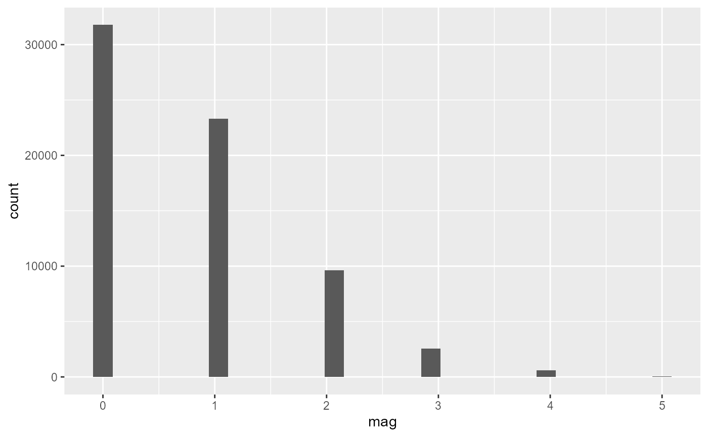

Tornado Data and Visualization
tornado.RmdThis package includes data downloaded from Tidy
Tuesday from the Data Science Learning Community. The data can be
accessed by loading the tornado and calling on the object
tornados, or alternatively using
tornado::tornados.
library(tornado)
library(tidyverse)
tornados
#> # A tibble: 68,693 × 27
#> om yr mo dy date time tz datetime_utc st
#> <dbl> <dbl> <dbl> <dbl> <date> <time> <chr> <dttm> <chr>
#> 1 192 1950 10 1 1950-10-01 21:00 America/… 1950-10-02 03:00:00 OK
#> 2 193 1950 10 9 1950-10-09 02:15 America/… 1950-10-09 08:15:00 NC
#> 3 195 1950 11 20 1950-11-20 02:20 America/… 1950-11-20 08:20:00 KY
#> 4 196 1950 11 20 1950-11-20 04:00 America/… 1950-11-20 10:00:00 KY
#> 5 197 1950 11 20 1950-11-20 07:30 America/… 1950-11-20 13:30:00 MS
#> 6 194 1950 11 4 1950-11-04 17:00 America/… 1950-11-04 23:00:00 PA
#> 7 198 1950 12 2 1950-12-02 15:00 America/… 1950-12-02 21:00:00 IL
#> 8 199 1950 12 2 1950-12-02 16:00 America/… 1950-12-02 22:00:00 IL
#> 9 200 1950 12 2 1950-12-02 16:25 America/… 1950-12-02 22:25:00 AR
#> 10 201 1950 12 2 1950-12-02 17:30 America/… 1950-12-02 23:30:00 IL
#> # ℹ 68,683 more rows
#> # ℹ 18 more variables: stf <dbl>, mag <dbl>, inj <dbl>, fat <dbl>, loss <dbl>,
#> # slat <dbl>, slon <dbl>, elat <dbl>, elon <dbl>, len <dbl>, wid <dbl>,
#> # ns <dbl>, sn <dbl>, f1 <dbl>, f2 <dbl>, f3 <dbl>, f4 <dbl>, fc <lgl>Below is a histogram to visualize the tornado magnitude counts of each level:
## Histogram example
tornados |>
ggplot(aes(x = mag)) +
geom_histogram()